Introdução
Informações Gerais
- Projeto: RECEITAS FÁCEIS
- Repositório GitHub: Template Trabalho Interdisciplinar
- Membros da equipe:
Contexto
Problema
Em crescimento, a uberização alcançou a área da gastronomia através dos aplicativos de entrega rápida e aumento do consumo de “junk foods”. Além disso, comidas saudáveis tendem a custar mais caro, levando as pessoas a preferirem comidas prontas e não desenvolverem autonomia na cozinha. Nesse contexto, o projeto Receitas Fáceis está sendo desenvolvido para reagir à essa tendência.
Objetivos
Os objetivos do projeto é ajudar as pessoas a solucionar o problema de não saberem cozinhar, ajudar a escolher receitas com os alimentos que voce tem em casa, colocar receitas explicativas.
Justificativa
A justificativa para a criação do projeto é de que como as pessoas estão consumindo muito "fast food" a proposta da criação de um site, cujo objetivo é proporcionar receitas saudaveis com alguns ingredientes que voce tem em casa proporcionando uma gama de receitas saudaveis para que a pessoa possa consumir.
Público-alvo
O público-alvo são pessoas que gostariam de aprender à cozinhar com os ingredientes que já possuem casa, incluindo opções vegetarianas. Além disso, tanto pessoas que desejam iniciar na jornada gastronômica quanto cozinheiros experientes podem se beneficiar com o nosso projeto.
Concepção (Design Thinking)
Processo de Design Thinking
O arquivo que se segue apresenta o resultado desse processo.
Especificações do Projeto
Histórias de Usuários
Com base na análise das personas foram identificadas as seguintes histórias de usuários:
PERSONA |
FUNCIONALIDADE |
MOTIVO/VALOR |
|---|---|---|
| Maria Clara - 19 anos | Início de semestre na faculdade e não estou com muito tempo para ir ao mercado várias vezes quando preciso fazer um lanche. Se tiver um lugar onde me ensine fazer receitas com as coisas que eu já tenho em casa me pouparia tempo. | Não ter que ir toda hora no supermercado |
| Amanda Souza - 22 anos | Tem um mês que estou morando em bh sozinha e preciso organizar minhas marmitas para levar para a faculdade. Minha mãe sempre fez minhas refeições, por isso não sei cozinhar. Eu precisaria de uma detalhamento claro de como fazer as coisas. | Procedimento detalhado de como fazer alguma receita |
| Leonardo Monteiro - 18 anos | Estou morando com amigos por causa da faculdade e só sei fazer o básico que aprendi com a minha mãe. Em casa ninguém sabe cozinhar direito e eu tenho vontade de comer algo novo porém não tenho paciência de ficar procurando na internet. Uma plataforma simples e fácil de usar seria útil para nós. | Comer algo diferente da rotina, mas fácil de fazer, através de uma plataforma simples de usar. |
Requisitos
As tabelas que se seguem apresentam os requisitos funcionais e não funcionais que detalham o escopo do projeto.
Requisitos Funcionais
| ID | Descrição do Requisito | Prioridade |
|---|---|---|
| RF-001 | Acesso às receitas dentro do próprio site | ALTA |
| RF-002 | Mostrar receitas através da busca por ingredientes separados | ALTA |
| RF-003 | Menu que apresenta ao usuário as diferentes seções de receitas do site | ALTA |
| RF-004 | Detalhamento e clareza na descrição de cada receita | ALTA |
| RF-005 | Perfil do usuário com informações individuais, sendo possível alterá-las | ALTA |
| RF-006 | Opção de favoritar receitas que o usuário tenha interesse | MÉDIA |
| RF-007 | Imagens do prato final visualmente atrativas | MÉDIA |
| RF-008 | Permitir ao usuário inserir novas receitas dentro so site | MÉDIA |
| RF-009 | Sugestões de receitas populares na página inicial | BAIXA |
| RF-010 | Contagem de receitas feitas pelo usuário | BAIXA |
| RF-011 | Seção de comentários dentro de cada receita e possibilidade de editar e excluir | BAIXA |
Requisitos Não-Funcionais
| ID | Descrição do Requisito | Prioridade |
|---|---|---|
| RNF-001 | Repositório do projeto salvo no GitHub do grupo | ALTA |
| RNF-002 | Salvar informações em um banco de dados (Json Server) | ALTA |
| RNF-003 | Site funcional em smartphones, laptops e desktops | ALTA |
| RNF-004 | Facilidade em achar os recursos que o site oferece | ALTA |
| RNF-005 | Acesso proibido às informações privadas do sistema pelo usuário | ALTA |
| RNF-006 | Sistema desenvolvido em HTML, CSS e JavaScript | MÉDIA |
| RNF-007 | O sistema deve suportar mais de 10 acessos de uma vez | MÉDIA |
| RNF-008 | Texto alternativo nas imagens caso elas não carreguem | BAIXA |
Projeto de Interface
User/Screen Flow e Protótipo interativo
Artefatos relacionados com a interface e a interacão do usuário na solução proposta.
Wireframes
Protótipo de telas do sistema em baixa fidelidade (rascunhos).
Metodologia
Ferramentas
Relação de ferramentas empregadas pelo grupo durante o projeto.
| Ambiente | Plataforma | Link de Acesso |
|---|---|---|
| Processo de Design Thinking | Miro | https://miro.com/ |
| Repositório de código | GitHub | https://github.com/ |
| Hospedagem do site | - | - |
| Protótipo Interativo | Figma | https://www.figma.com/ |
Gestão do Projeto
Divisão de papéis no grupo e apresentação da estrutura da ferramenta de controle de tarefas (Kanban).
Divisão de Cargos:
Scrum Master: Gabriel Diniz Reis Vianna;
Product Owner: Augusto Gomes de Alcântara Bizarria;
Development Team: Augusto Gomes de Alcântara Bizarria, Daniel Costa Braga de Sousa, Gabriel Azevedo Alvarenga, Gabriel Diniz Reis Vianna, Lucas Franco Zanforlim e Marcos Vicenzo Borello;
Áreas de atuação:
Miro: Gabriel Azevedo Alvarenga e Gabriel Diniz Reis Vianna;
Figma: Marcos Vicenzo Borello;
Apresentação do projeto: Augusto Gomes de Alcântara Bizarria e Daniel Costa Braga de Sousa;
Tela Inicial: Augusto Gomes de Alcântara Bizarria, Daniel Costa Braga de Sousa e Gabriel Diniz Reis Vianna;
Menu de Opções: Daniel Costa Braga de Sousa;
Sugestões: Augusto Gomes de Alcântara Bizarria;
Página de Receita: Augusto Gomes de Alcântara Bizarria, Gabriel Diniz Reis Vianna e Lucas Franco Zanforlim;
Comentários: Gabriel Azevedo Alvarenga;
Adicionar receitas ao site: Daniel Costa Braga de Sousa;
Página do Perfil: Augusto Gomes de Alcântara Bizarria, Gabriel Diniz Reis Vianna e Marcos Vicenzo Borello;
Receitas favoritadas: Gabriel Diniz Reis Vianna;
Seção de Receitas Favoritadas: Gabriel Diniz Reis Vianna;
Avaliação: Lucas Franco Zanforlim;
Receitas feitas(contador): Augusto Gomes de Alcântara Bizarria;
Json Server: Gabriel Diniz Reis Vianna;
Documentação: Augusto Gomes de Alcântara Bizarria e Gabriel Diniz Reis Vianna;
Brainstorming
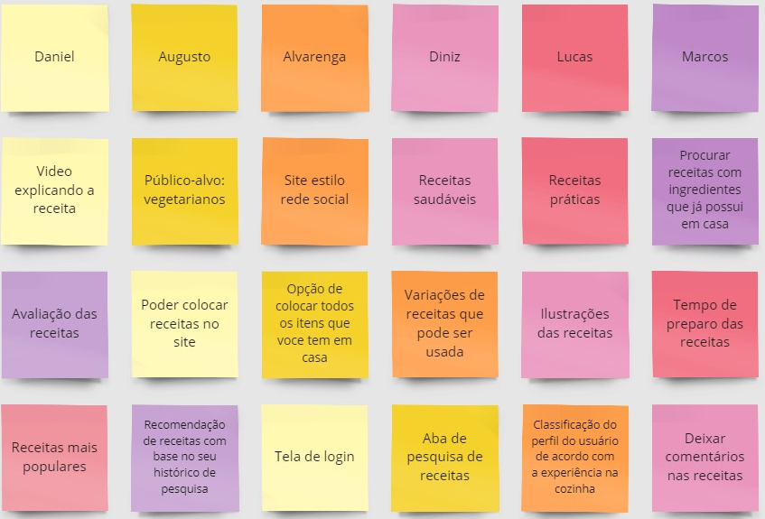Controle de Versão

O ambiente de trabalho utilizado no projeto foi o Visual Studio Code junto com o controle de versão Git. A parte inicial do projeto foi salva por cada desenvolvedor no seu respectivo repositório individual do GitHub. Após a montagem preliminar foi-se de extrema utilidade o uso de um repositório geral para o projeto inteiro. As "comits" feitas eram passadas para o Scrum Master que autorizava as mudanças. Ocorrerem conflitos de comits em que "class" de pessoas diferentes possuíam o mesmo nome, estilizações no "CSS" sobrepuseram arquivos fundidos, mas que foram corrigidos assim que percebidos. Após a metade do projeto o grupo se acostumou com o controle de versão e o trabalho decorreu conforme o previsto. Dessa forma, o trabalho individual de cada membro foi rapidamente integrado ao corpo do site.
O repositório do projeto está disponível no GitHub.
Solução
Video do Projeto
O vídeo a seguir traz uma apresentação do problema que a equipe está tratando e a proposta de solução.
Funcionalidades
Funcionalidade 1 - Cadastro de usuário
Cria um perfil do usuário na plataforma
- Estrutura de dados: usuarios
- Instruções de acesso:
- Abra o site e clique em "novo usuário"
- Preencha seus dados e clique em salvar
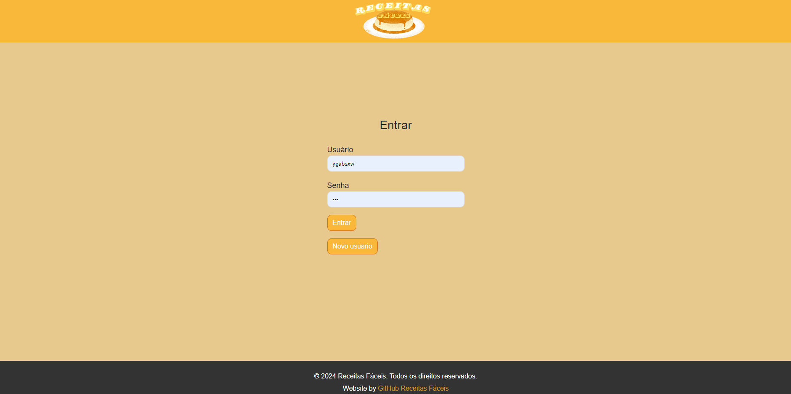
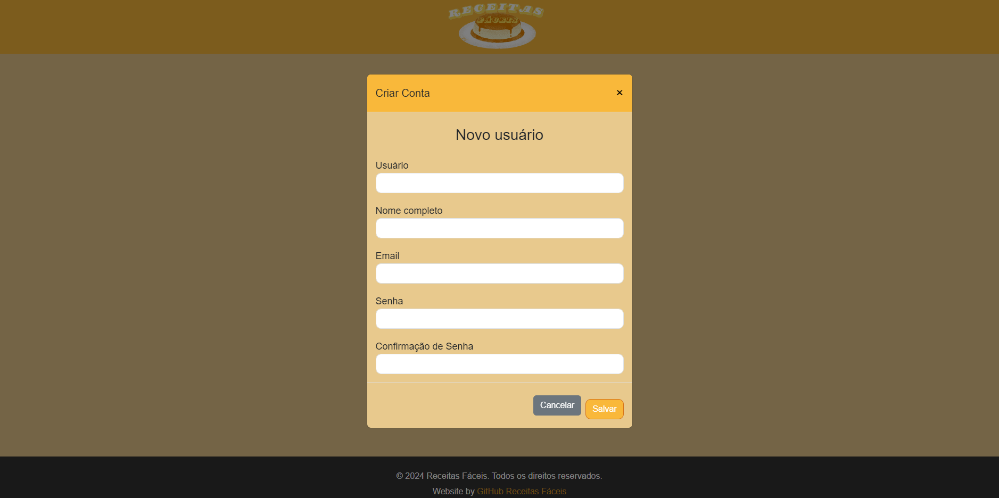
Funcionalidade 2 - Login de usuario
Permite ao usuario acessar sua conta
- Estrutura de dados: usuario
- Instruções de acesso:
- Abra o site e efetue o login
Funcionalidade 3 - Editar perfil
Permite o usuário personalizar seu perfil na plataforma
- Estrutura de dados: usuario
- Instruções de acesso:
- Abra o site e efetue o login
- Acesse o perfil
- Em seguida, clique no ícone representado por uma "folha com um lápis"
- Faça as alterações desejadas
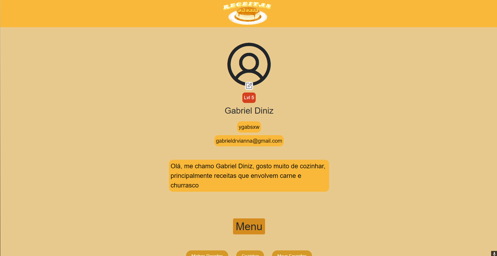
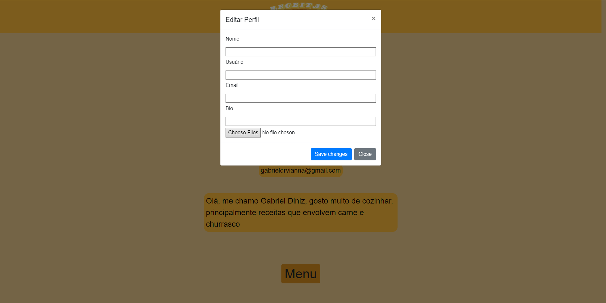
Funcionalidade 4 - Procurar receitas pelo nome
Mostra receitas pesquisadas pelo usuário
- Estrutura de dados: -
- Instruções de acesso:
- Abra o site e efetue o login
- Clique na barra de pesquisa e digite o nome da receita desejada
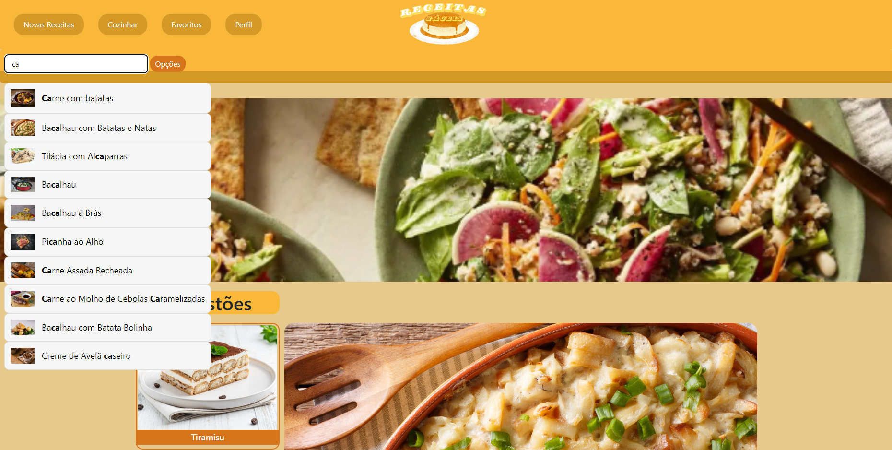
Funcionalidade 5 - Descobrir receitas pelo tipo de ingrediente
Mostra receitas que contem ingredientes que o usuário seleciona
- Estrutura de dados: -
- Instruções de acesso:
- Abra o site e efetue o login
- Selecione a opção "cozinhar"
- Em seguida, escreva o ingrediente que você deseja clique em "adicionar"
- As receitas que contem os ingredientes selecionados irão aparecer

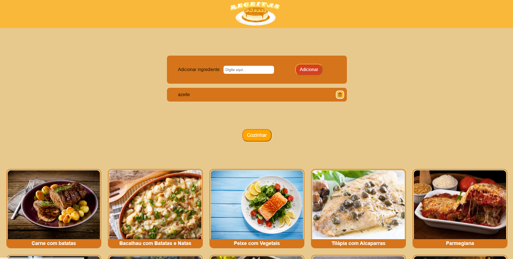
Funcionalidade 6 - Adicionar receitas ao site
Permite ao usuário adicionar suas próprias receitas
- Estrutura de dados: novas_receitas
- Instruções de acesso:
- Abra o site e efetue o login
- Pela tela principal selecione a opação "Novas Receitas"
- Preencha as informações da nova receita e clique em "enviar"
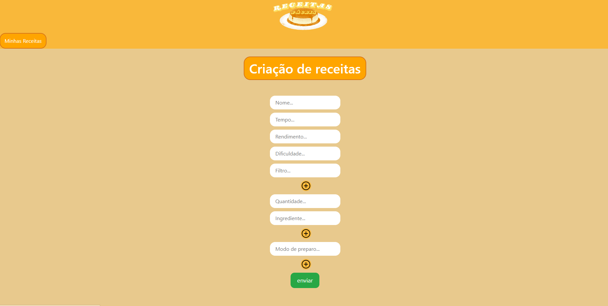
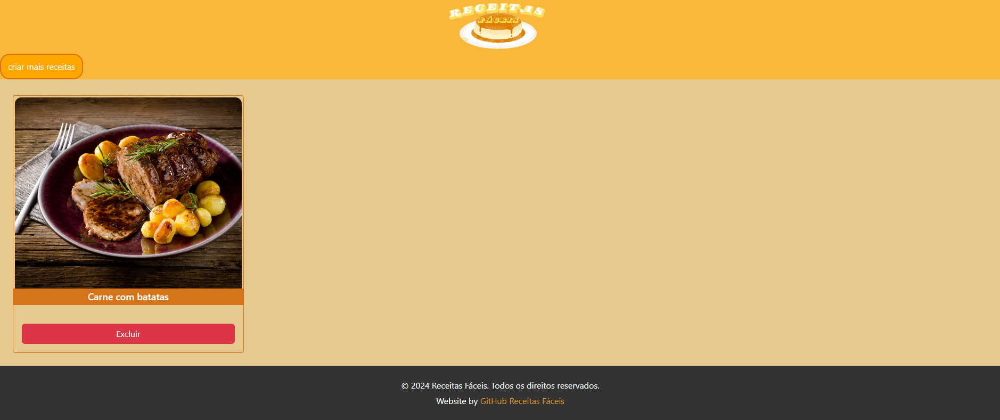
Funcionalidade 7 - Favoritar receitas
Favorita receitas que o usuário desejar
- Estrutura de dados: favoritos
- Instruções de acesso:
- Abra o site e efetue o login
- Acesse a tela principal e escolha uma receita
- Em seguida, clique no ícone de "bandeira"
- A receita adicionada aos favoritos pode ser acessada no perfil do usuário
- Para remover uma receita dos favoritos entre na seção "Meus Favoritos" dentro do perfil
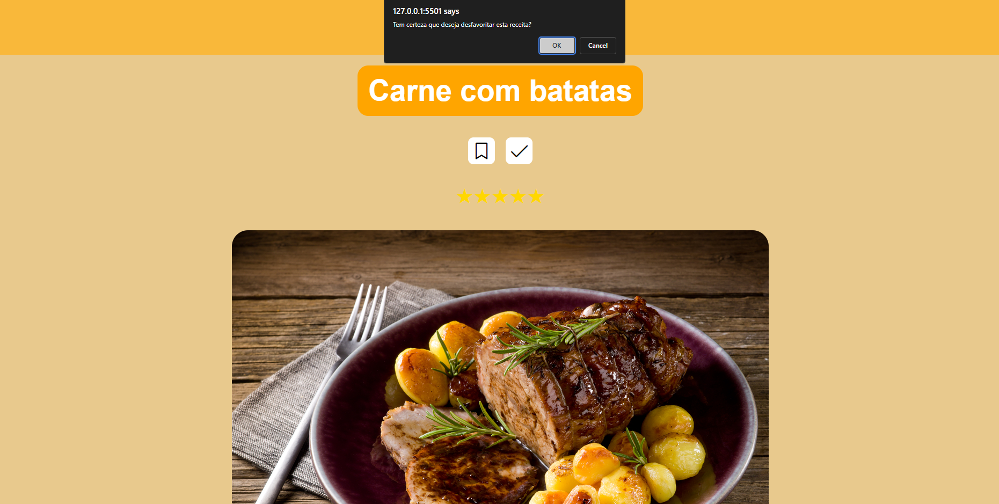
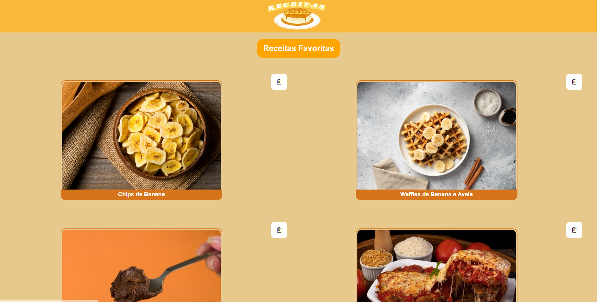
Funcionalidade 8 - Receitas feitas pelo usuário
Contabiliza as receitas feitas pelo usuário
- Estrutura de dados: favoritos
- Instruções de acesso:
- Abra o site e efetue o login
- Acesse a tela principal e escolha uma receita
- Em seguida, clique no ícone de "check"
- A receita foi contabilizada e indica o nível do usuário dentro da plataforma
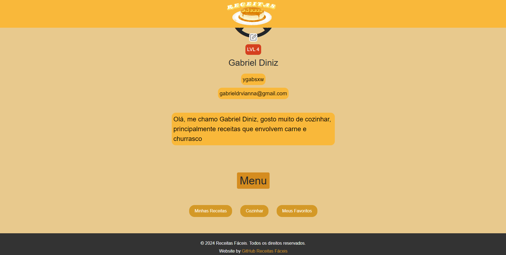
Funcionalidade 9 - Menu de Categorias
- Estrutura de dados: -
- Instruções de acesso:
- Abra o site e efetue o login
- Acesse a tela principal e clique em "opções"
- Em seguida, selecione a categoria dentro do menu que preferir
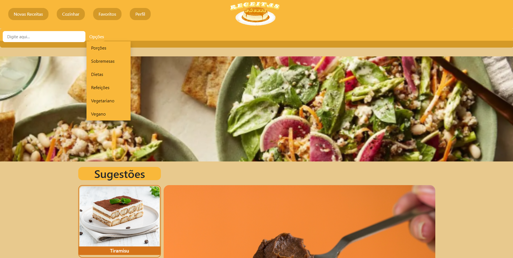
Estruturas de Dados
Foi utilizada a seguinte estrutura no formato JSON.
Estrutura de Dados - RECEITAS
Receitas presentes no sistema
{
"id": 4,
"nome": "Brigadeiro de Colher",
"tempo": "15min",
"rendimento": "8",
"dificuldade": "fácil",
"filtro": [
"sobremesa"
],
"imagem": "https://receitasmondial.com.br/wp-content/uploads/2024/04/brigadeiro-de-colher-mondial.jpg",
"ingredientes": [
{
"quantidade": "1 lata de",
"ingrediente": "leite condensado"
},
{
"quantidade": "3 colheres de sopa de",
"ingrediente": "chocolate em pó"
},
{
"quantidade": "1 colher de sopa de",
"ingrediente": "manteiga"
}
],
"modo_preparo": [
"1- Coloque todos os ingredientes em uma tigela grande e alta, misture bem e leve ao Micro-ondas por 3 minutos.",
"2- Retire do Micro-ondas, misture por 1 minuto com uma espátula, leve novamente ao micro-ondas por mais 3 minutos.",
"3- Retire do Micro-ondas, misture por mais 1 minuto, aguarde amornar ou esfriar e sirva como preferir."
]
},
Estrutura de Dados - USUÁRIOS
Registro de usuário no sistema
{
"id": 1,
"login": "ygabsxw",
"bio": "Novo Bob Esponja",
"senha": "123",
"nome": "Gabriel Diniz",
"email": "gabrieldrvianna@gmail.com"
},
Estrutura de Dados - FAVORITOS
Registro de receitas favoritadas pelo usuário no sistema
{
"id": 3,
"receitasId": 33,
"usuariosId": 1
},
Estrutura de Dados - NOVAS RECEITAS
Registro de novas receitas criadas pelo usuário no sistema
{
"id": 1,
"nome": "Carne com batatas",
"tempo": "30min",
"rendimento": "4",
"dificuldade": "fácil",
"filtro": [
"porçao"
],
"imagem": "https://receitasmondial.com.br/wp-content/uploads/2024/04/shutterstock_92722804.jpg",
"ingredientes": [
{
"quantidade": "4",
"ingrediente": "batatas"
},
{
"quantidade": "",
"ingrediente": "azeite"
},
{
"quantidade": "",
"ingrediente": "sal"
},
{
"quantidade": "",
"ingrediente": "pimenta"
},
{
"quantidade": "",
"ingrediente": "alecrim"
},
{
"quantidade": "400g",
"ingrediente": "filé mignon"
}
],
"modo_preparo": [
"1- Corte as batatas em tiras finas, sem chegar ao final da batata, de forma que as lâminas se mantenham presas.",
"2- Tempere com azeite, sal e pimenta.",
"3- Coloque as batatas na assadeira de cima da Air Fryer e utilize a função batatas, que irá contar 20 minutos.",
"4- Pincele azeite nos medalhões e tempere com sal e pimenta dos dois lados.",
"5- Quando estiver faltando 10 minutos para o cozimento das batatas, adicione a carne."
]
},
Módulos e APIs
Esta seção apresenta os módulos e APIs utilizados na solução.
Apresente os módulos e APIs utilizados no desenvolvimento da solução. Inclua itens como: (1) Frameworks, bibliotecas, módulos, etc. utilizados no desenvolvimento da solução; (2) APIs utilizadas para acesso a dados, serviços, etc.
Images:
- Figma - https://www.figma.com/
- Mondial - https://receitasmondial.com/
Fonts:
- Figma - https://www.figma.com/
- Phosphor Icons - https://phosphoricons.com/
Scripts:
- Bootstrap 5 - http://getbootstrap.com/
- jQuery - http://www.jquery.com/
- W3schools - https://www.w3schools.com/
FAQ
Perguntas e respostas comuns associadas ao projeto.
Referências Bibliográficas
Esta seção apresenta as referências bibliográficas utilizadas no projeto.
- Ana Maria Braga (Receitas)
- Nestle (Receitas)
- Mondial (Receitas)
- Ferramentas de front-end (w3schools)
- Repositório de Exemplos (Replit)
Sites:
- Cargos e Funções
- Consumo de fast food no Brasil
- Cozinhar como forma de combater doenças
- Desnutrição e obesidade em crianças no Brasil
- Metodologia Scrum (Vídeo)
Pesquisa:
- WebTech (GitHub)